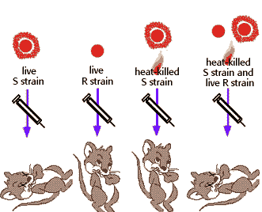

Nucleic Acids and the Genetic Material Problem Set 1
Problem 1 Tutorial: DNA, the genetic material
Which scientists first gave experimental evidence that DNA is the genetic material?Avery, MacLeod, and McCarty, 1944
Avery, MacLeod, and McCarty's landmark study followed up on the work of Griffith (diagrammed below).  |
|


University of Arizona
Thursday, October 3, 1996
Contact the Development Team
http://biology.arizona.edu
All contents copyright © 1996. All rights reserved.